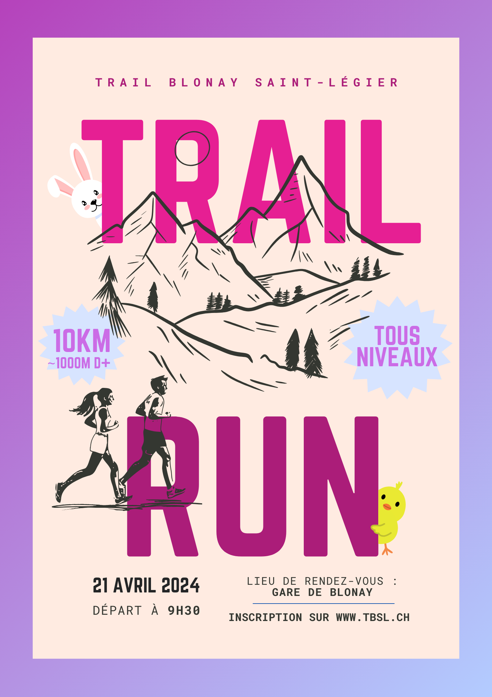

Les communautés trail run
Nous proposons un run communautaire dans la région de la Riviera de façon mensuelle. Tu trouveras nos récaps de nos sorties dans l'onglet commu trail run. Tout le monde est bienvenue, néanmoins chaque personne doit être capable de courir la distance et le dénivelé indiqué dans le flyer.
Les prochaines sorties sont organisées le dimanche 21 avril et le dimanche 5 mai. Tou
Édition spéciale le dimanche 5 mai
TBSL s'engage dans le duel intercommunal et proposera une édition spéciale le dimanche 5 mai. Nous nous réjouissions de vous retrouvez à cette date afin de vous faire découvrir les pléiades en partant de la gare de Blonay.
Édition du dimanche 21 avril
L'édition d'avril sera aussi une séance particulière. Nous avons décidé d'effectuer une séance de côte longue ou chacun pourra aller à son rythme. On vous a jamais dit que les séances de côte pouvaient être amusantes? Pour le découvrir on te laisse t'inscrire et découvrir le spot de notre séance de côte ci-dessous.
Flyer d'avril :

Informations sur le parcours d'avril :
Tu peux retrouver le gpx de la sortie ICI et le profil ci-dessous. À noter que le rendez-vous est à la gare de Blonay.
Matériels :
Concernant le matériel voici une petite liste que nous conseillons d'avoir :
- -Bonnes chaussures avec du profil (on risque d'être sur de la neige)
- -Réserve d'eau
- -Réserve alimentaire
- -Téléphone mobile
- -Vêtements adaptés à la météo
- -Vêtements chauds d'après course (pour l'apéro après la course)
Après la sortie nous allons organiser un petit apéro afin de pouvoir échanger. Le parcours peut encore changer selon
les conditions météorologiques.
Pour ne rien rater des prochains communautés trail run nous te conseillons de nous suivre sur les différents
réseaux sociaux ci-dessous dans le pied de page.